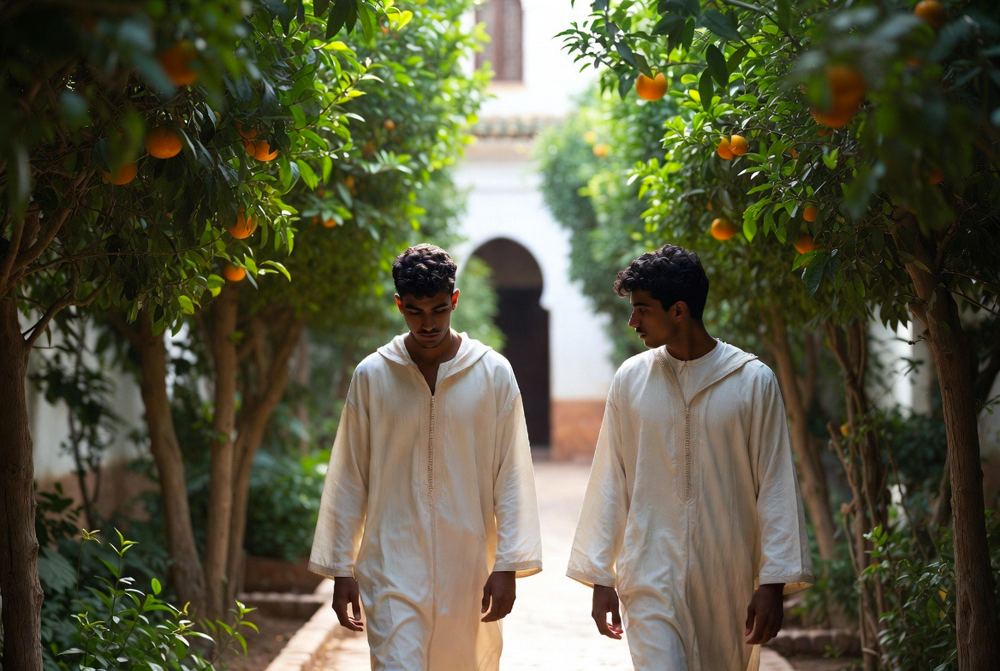
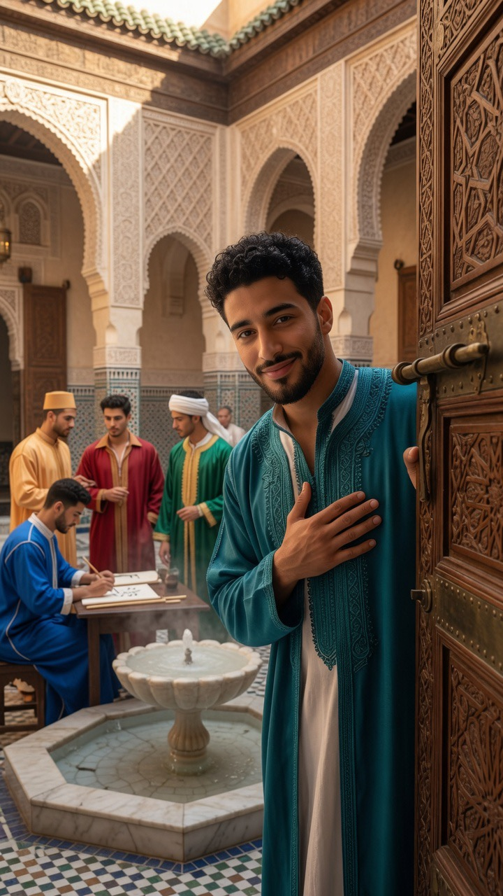

Jardin & Potager
Le jardin n’est pas un décor. C’est un espace vivant, ordonné et productif, fidèle à la tradition du riyāḍ arabe.

Dans la culture arabe, le jardin est un modèle d’ordre : l’eau, l’ombre, le parfum et la nourriture y sont pensés ensemble. Le riyāḍ n’oppose pas le beau et l’utile — il les tient dans un même rythme.
Au Riad, trois espaces se distinguent sans se séparer : le jardin principal, le jardin secret (bustān) et le potager. Chacun a sa fonction, sa lumière, son silence.
Ce n’est pas un parc d’agrément. C’est un système vivant qui forme le regard, nourrit la table et rappelle que la beauté, ici, commence par la terre.
La structure du riyāḍ
Axes, parterres, bassin, allées d’ombre. L’eau organise le parcours ; les arbres fixent le temps. On ne traverse pas le jardin comme un décor : on y entre, on y marche, on y apprend à voir lentement.
JARDIN PRINCIPAL
Cour et allées, agrumes, myrte, jasmin. Ombre et parfum pour le quotidien de la maison.
JARDIN SECRET
Bustān plus retiré : roses rares, lys, espèces choisies. Silence plus dense, accès mesuré.
POTAGER
Légumes, herbes, fruitiers. Le travail de la terre fait partie de la formation.
Le jardin principal
Espace partagé de la maison. Agrumes, arbustes et aromatiques y structurent l’ombre et le parfum. C’est le visage le plus visible du riyāḍ.
Les plantes
Agrumes
Orangers amers, citronniers, parfois bergamote. Ombre, parfum des fleurs, fruit pour la table et l’eau de fleur d’oranger.

Mirto (arrayán)
Myrtus communis. Emblème des jardins andalous et maghrébins. Feuillage dense, fleur discrète, usage rituel et ornemental.

Jasmin
Jasmin blanc et jasmin de nuit. Le parfum du soir, lié à la tradition des cours intérieures.

Grenadier & figuier
Arbres de la mémoire méditerranéenne. Fruit, ombre, présence symbolique dans la culture arabe.

Cyprès
Verticalité, silence, limite. Ils marquent les axes et protègent l’intimité des espaces.

Aromatiques
Menthe, basilic, romarin, verveine. Pont entre le jardin et la table, entre le geste et le goût.
BUSTĀN
Le jardin secret
Plus retiré que le jardin principal. Roses anciennes, lys, stephanotis, espèces rares du bustān. Parfum plus fort, ombre plus épaisse, accès mesuré.
Dans la tradition arabe, le jardin secret n’est pas un luxe gratuit : c’est un lieu de retenue, de maturité, où l’on apprend que tout n’est pas donné d’un coup.
Ceux qui y travaillent — taille des roses, soin des plantes délicates — y apprennent la patience autant que le geste.
Le potager
Légumes de saison, herbes, quelques fruitiers. Le potager nourrit la table de la maison et forme ceux qui y résident : semer, arroser, récolter, respecter le temps de la terre.
Nourriture de la maison
Ce qui pousse ici n’est pas un exercice esthétique. Il entre dans les repas partagés, dans la cuisine du soir, dans le rythme concret de la journée.
Travail et formation
Le soin du potager fait partie de la formation des jeunes du Dar al-Hiraf. La main qui taille le bois ou pose le zellige apprend aussi à toucher la terre.
الحديقةُ ظلٌّ وماءٌ ورائحةٌ
وموضعُ سكينةٍ لمن عرفَ أن يبطئَ
« Le jardin est ombre, eau et parfum —
et lieu de quietude pour qui sait ralentir. »
Tradition du riyāḍ — lecture contemporaine